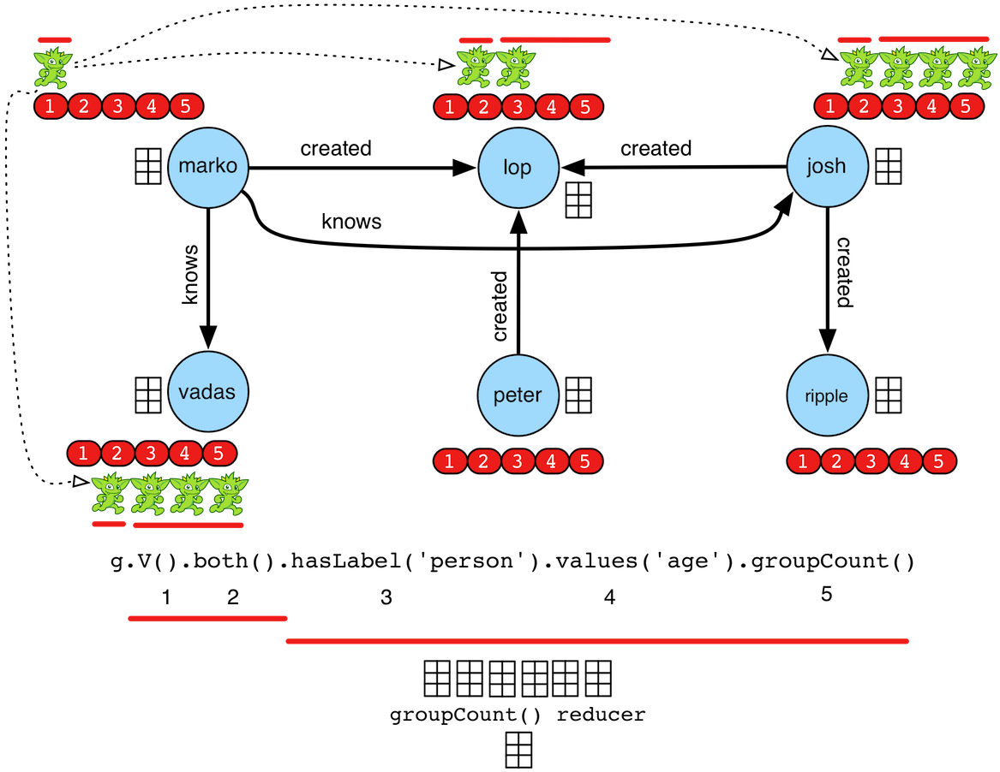
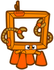
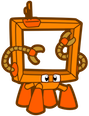
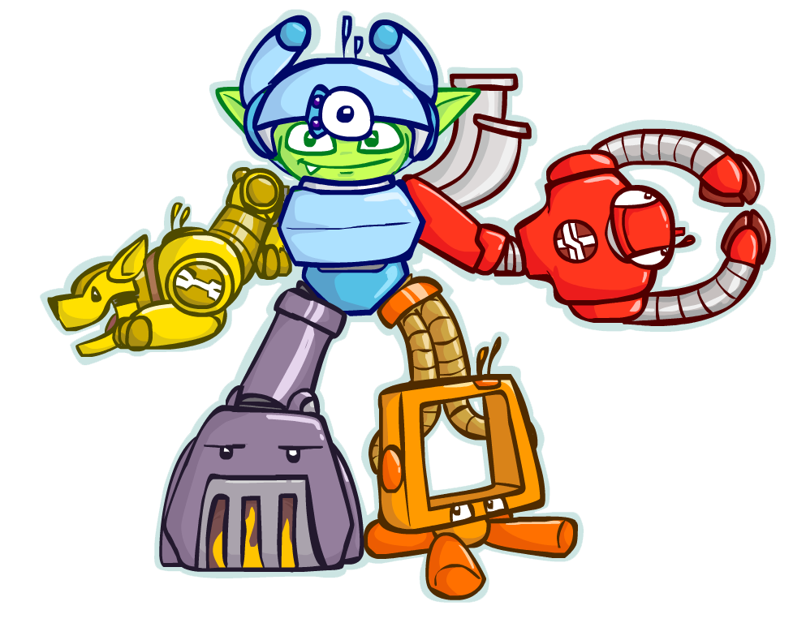
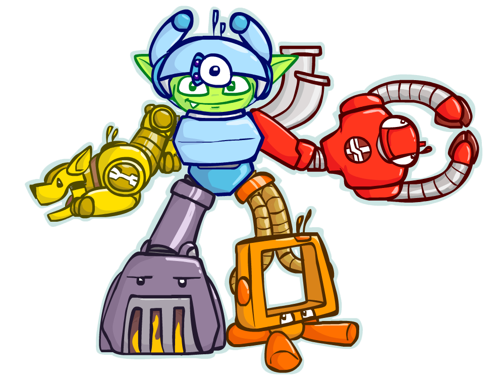

Provider Listing Policy
Graph system and language providers can have the project listed in two locations on the Apache TinkerPop homepage. The first location is on the homepage index.html. The second is on the homepage providers.html. The policies for each are provided below. Note that the Apache Software Foundation's linking policy supercede those stipulated by Apache TinkerPop. All things considered, if your project meets the requirements, please email Apache TinkerPop's developer mailing list requesting that your project be added to a listing.
Index Listing Requirements
- The project must be either a TinkerPop-enabled graph system, a Gremlin language variant/compiler, a Gremlin language driver, or a TinkerPop-enabled middleware tool.
- The project must have a public URL that can be referenced by Apache TinkerPop.
- The project must have at least one release.
- The project must be actively developed/maintained to a current or previous "y" version of Apache TinkerPop (3.y.z).
- The project must have some documentation and that documentation must make explicit its usage of Apache TinkerPop and its version compatibility requirements.
Provider Listing Requirements
- The project must be either a TinkerPop-enabled graph system, a Gremlin language variant/compiler, or a TinkerPop-enabled tool.
- The project must have a public URL that can be referenced by Apache TinkerPop.
- The project must have a homepage that is not simply a software repository page.
- The project must have a high-resolution logo that can be used by Apache TinkerPop.
- The project must have at least one release.
- The project must be actively developed/maintained to a current or previous "y" version of Apache TinkerPop (3.y.z).
- The project must have significant documentation and that documentation must make explicit its usage of Apache TinkerPop and its version compatibility requirements.
Graphic Usage Policy
Apache TinkerPop has a plethora of graphics that the community can use. There are four categories of graphics. These categories and their respective policies are presented below. If you are unsure of the category of a particular graphic, please ask on our developer mailing list before using it. Finally, note that the Apache Software Foundation's trademark policies supercede those stipulated by Apache TinkerPop.
- Character Graphics: A character graphic can be used without permission as long as its being used in an Apache TinkerPop related context and it is acknowledged that the graphic is a trademark of the Apache Software Foundation/Apache TinkerPop.
- Character Dress-Up Graphics: A character graphic can be manipulated ("dressed up") and used without permission as long as it's being used in an Apache TinkerPop related context and it is acknowledged that the graphic is a trademark of the Apache Software Foundation/Apache TinkerPop.
- Explanatory Diagrams: Explanatory diagrams can be used without permission as long as they are being used in an Apache TinkerPop related context, it is acknowledged that they are trademarks of the Apache Software Foundation/Apache TinkerPop, and are being used for technical explanatory purposes. 
- Character Scene Graphics: Character scene graphics require permission before being used. Please ask for permission on the Apache TinkerPop developer mailing list.


 


 
